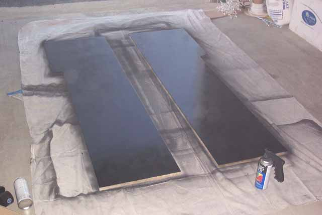

Once the t-molding
cut-outs are done, smooth everything out with a file to clean things up
and time for some paint. Spray on a first coating, doesn't
need to be perfect, also spray the front edges of the side panels where
the black t-molding (available from www.happcontrols.com) is going to go.
Wait 15 mins, put a 2nd coat on and repeat for a 3rd coat and if needed,
give it a 4th and final coat, let dry for 1-2 hours in a well ventilated
area.

Make sure to paint the side
panels on the outside facing sides. You wont need to paint
the inside sides of the panels, noone will be seeing them except you when
you install the TV and wire the kiosk up. Once
these feel dry enough, put them off to the side and let them sit a good
full day or so to allow the paint to dry thoroughly. The side
panels will be getting additional custom racing stripes down the sides
later on.... you'll need yellow, red and blue spray paint.
Also you'll need some masking tape, an exacto knife and some newspaper.
A yard stick or straight edged object will also be needed for setting up
the lines for masking the surface later on when we paint the striping on
the sides.....